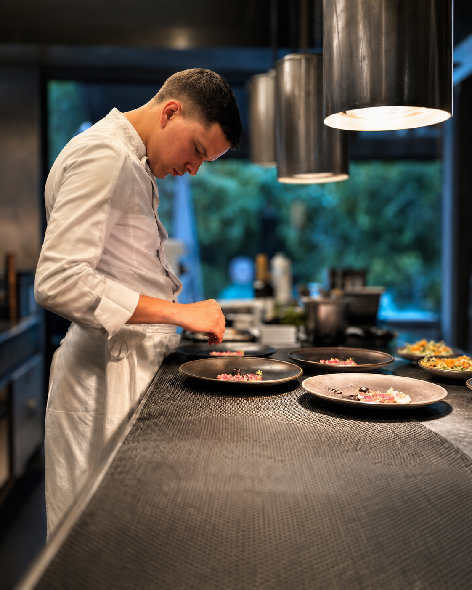
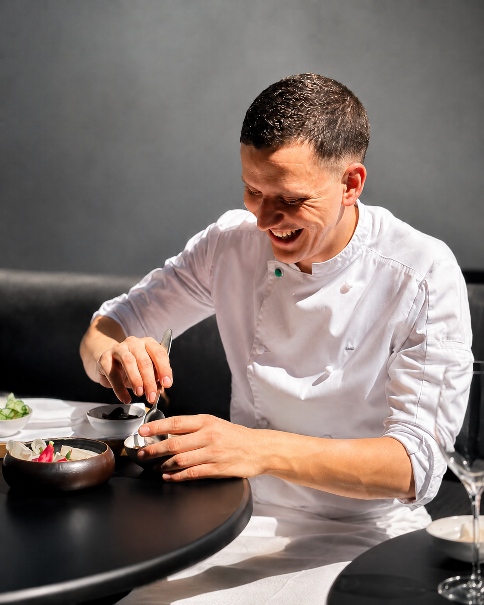
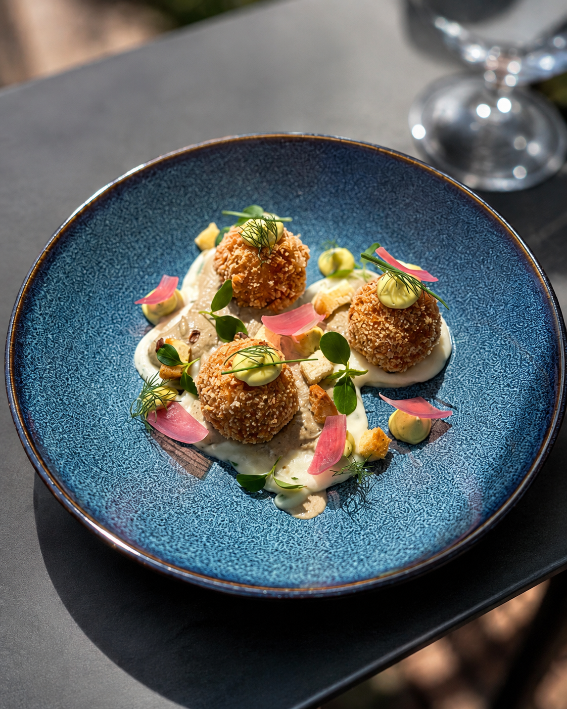
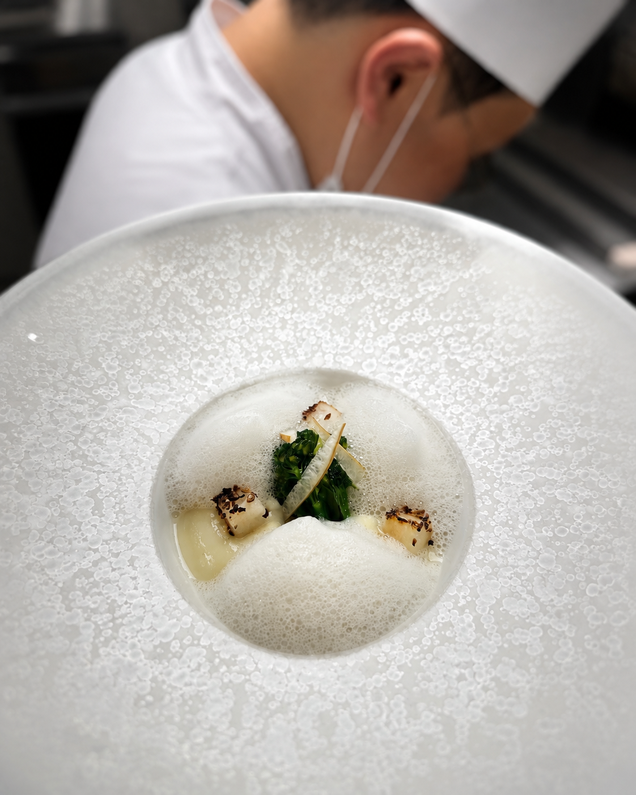
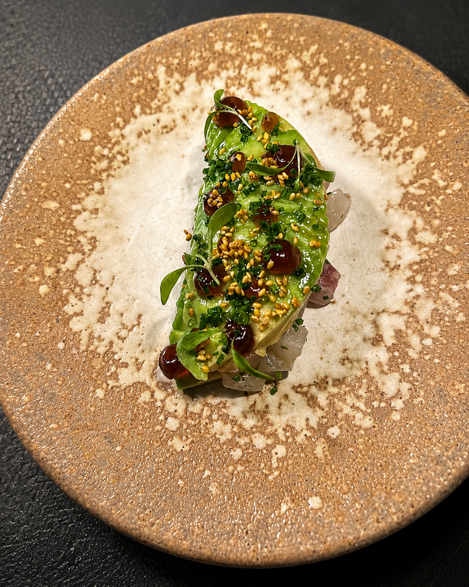
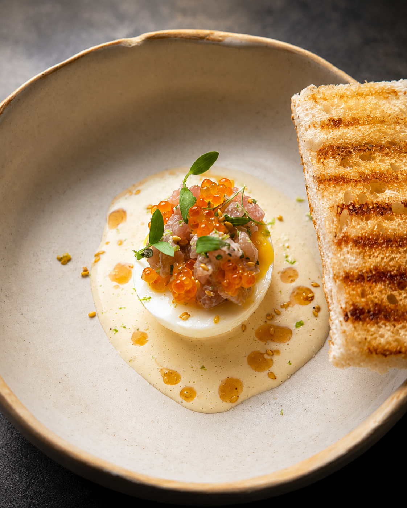
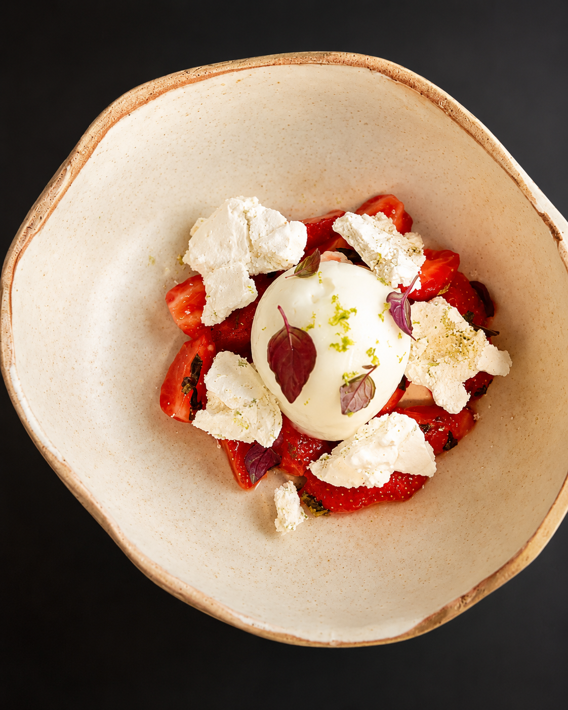

Paris
Prunier
Moët & Chandon par Alléno
Izakaya Dassai
Pavyllon Paris — 1 étoile Michelin

Chef privé · Chef à domicile
Une cuisine de restaurant pensée pour votre table.

Le chef
Ma cuisine part du produit et de l’envie de le servir avec justesse. Mon parcours au sein de différentes maisons, en France comme à l’étranger, a nourri une attention particulière au geste, à la précision et à la régularité.
Après trois années comme sous-chef au sein du Groupe Alléno, et des expériences entre Paris, Osaka et Séoul, j’ai souhaité rapprocher cette exigence de quelque chose de plus intime : une table privée, quelques convives et un menu imaginé pour l’occasion.
Chaque dîner est une nouvelle rencontre entre un lieu, une saison et les personnes réunies autour de la table.
02
Cuisine

Choisir, observer, respecter la saison. L’assiette commence avant le geste.

Chercher la précision sans effacer le goût.

Une cuisson, une sauce, un assaisonnement : chaque détail doit servir une lecture claire de l’assiette.

La cuisine s’adapte à la saison, au lieu, aux convives et à l’occasion. Le menu n’est jamais pensé indépendamment de la table qui va le recevoir.
03
Parcours
Trois années comme sous-chef au sein du Groupe Alléno, au contact de maisons et d’univers différents. De Paris à Osaka puis Séoul, ces expériences ont progressivement nourri ma manière d’aborder la cuisine.
Prunier
Moët & Chandon par Alléno
Izakaya Dassai
Pavyllon Paris — 1 étoile Michelin
L’Abysse Osaka
STAY Seoul
Ces différentes maisons ont pu contribuer à construire un regard où précision, régularité et attention au produit occupent une place centrale. Aujourd’hui, elles constituent une partie du bagage avec lequel j’imagine mes tables privées.
04
À votre table
Un dîner privé permet de retrouver l’attention d’une table gastronomique dans un cadre plus personnel : le vôtre.
Une table, quelques convives, un menu imaginé pour l’occasion.
Une expérience plus longue construite en plusieurs séquences.
Pour les demandes particulières, événements privés et projets spécifiques.

Tarification sur demande selon le menu, les produits, le nombre de convives et le lieu.
Imaginer votre dîner ↗05
Contact
Parlez-moi simplement de votre dîner, de la date et du nombre de convives. Nous construirons la suite ensemble.
thibaut.protytgat@icloud.com